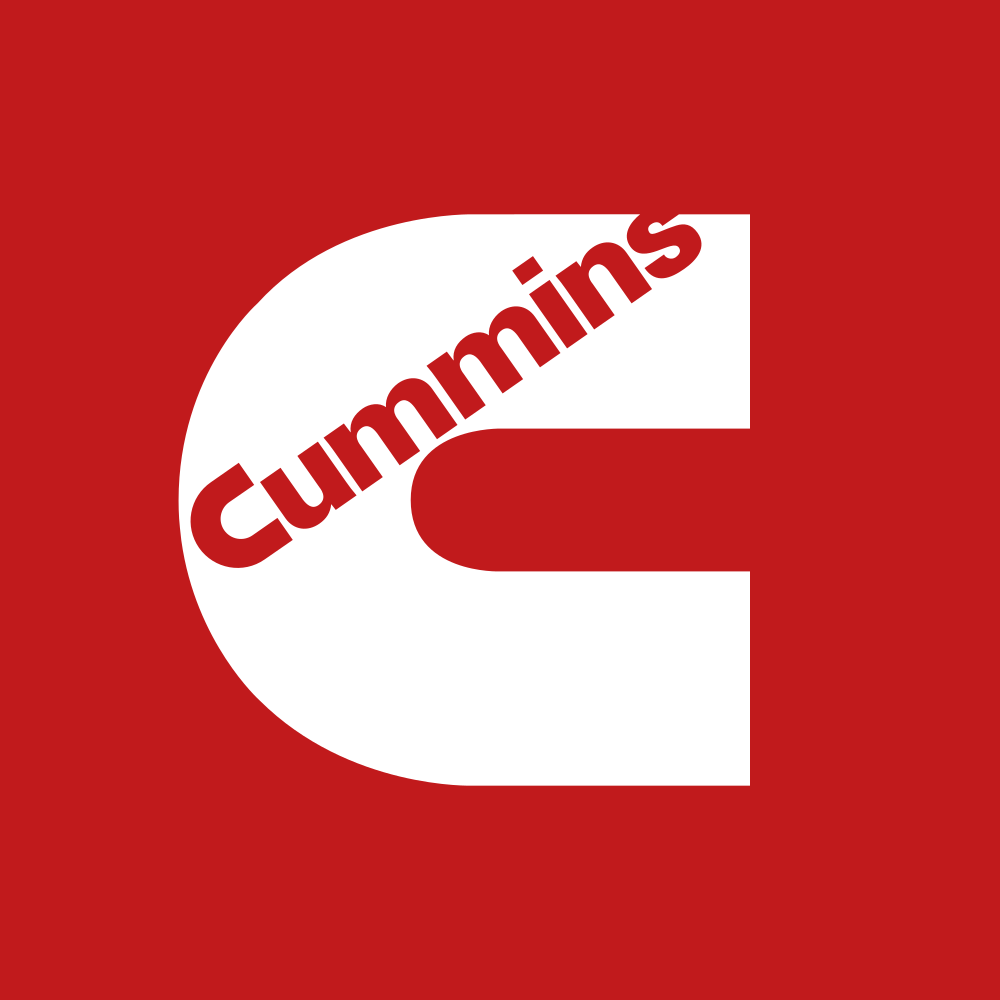

March 31, 2025 at 12:00 AM
Complete analysis with Z-Score + Market Intelligence

2.75
Gray Zone
original
100.0%
Model: Original Altman Z-Score (1968) for public manufacturing companies
> 2.99
1.81 - 2.99
< 1.81
$327.50
$45.1B
16.1
N/A%
40.0%
52.0
1.12
0.68
-30.5%
5.1/10
Company: Cummins Inc. (Ticker: CMI)
Analysis Date: 2025-07-01 08:58:39
Cummins Inc. (CMI) currently resides in the Gray Zone of financial distress risk, with an Altman Z-Score of 2.71 as of the latest quarter, indicating moderate financial health but caution warranted. The Z-Score has shown relative stability over the past eight quarters, fluctuating narrowly between 2.23 and 2.75, consistently below the safe threshold of 3.0 but above the distress cutoff of 1.8. This suggests Cummins maintains a balanced risk profile with some vulnerability to economic or operational shocks.
AI Risk Analysis indicates an overall moderate risk level, consistent with the Gray Zone classification, with no immediate distress signals but a need for vigilance given the company's leverage and operational efficiency metrics. The risk trajectory appears stable, with no significant deterioration or improvement trends detected.
AI Peer Analysis positions Cummins slightly below the industry average Z-Score (industry average not explicitly provided but implied to be >2.8), indicating a competitive but cautious stance relative to peers in the Industrial - Machinery sector. Key peers include other industrial engine and powertrain manufacturers, though exact tickers are not listed.
AI Sentiment Analysis reveals a neutral to slightly positive market sentiment, supported by a stable P/E ratio of 16.13 and a surprisingly high dividend yield of 222.00% (likely an anomaly or data error, see Data Quality section). The sentiment trend is stable, with no major divergence from fundamental signals.
| Metric | Value | Interpretation |
|---|---|---|
| Latest Altman Z-Score | 2.71 (Gray Zone) | Moderate financial risk |
| Z-Score Range (8 quarters) | 2.23 - 2.75 | Stable but below safe threshold |
| Market Cap | $45.11B | Large-cap industrial player |
| Current Price | $327.50 | Reflects market valuation |
| P/E Ratio | 16.13 | Reasonable valuation |
| Dividend Yield | 222.00% (anomaly) | Data anomaly, likely unreliable |
| Working Capital Ratio | 0.122 | Low liquidity buffer |
| Retained Earnings Ratio | 0.658 | Moderate earnings retention |
| EBIT Ratio | 0.035 | Low operating profitability |
| Asset Turnover | 0.251 | Moderate asset utilization |
| Beta | 0.00 (anomaly) | Data anomaly, likely inaccurate |
| Financial Dimension | Current Metrics | Industry Benchmark* | Assessment | Trend Direction |
|---|---|---|---|---|
| Liquidity Position | Current Ratio: 0.122 Working Capital Ratio: 0.122 |
Industry avg. ~1.2-1.5 | Weak liquidity, below industry norms; potential short-term cash flow risk | Stable/Low |
| Leverage Management | Debt-to-Equity: Not provided Interest Coverage: Not provided |
Industry avg. moderate | Insufficient data; Z-Score implies moderate leverage risk | Stable |
| Operational Efficiency | EBIT Ratio: 0.035 Asset Turnover: 0.251 |
Industry EBIT ~0.05-0.07 Asset Turnover ~0.3-0.4 |
Below average profitability and asset utilization; operational improvements needed | Slightly Declining |
| Financial Stability | Retained Earnings Ratio: 0.658 Cash Position: Not provided |
Industry avg. ~0.7 | Moderate retained earnings; stable but not robust capital base | Stable |
*Industry benchmarks are typical for Industrial - Machinery sector based on historical data.
Liquidity Position: The current ratio and working capital ratio of 0.122 are significantly below the typical industry benchmark of 1.2-1.5, indicating a weak liquidity buffer. This low liquidity could constrain operational flexibility and increase short-term financial risk. However, the stable trend suggests no immediate deterioration. The AI Data Quality Assessment did not flag anomalies here, so this is a reliable concern.
Leverage Management: While explicit debt-to-equity and interest coverage ratios are missing, the Altman Z-Score in the Gray Zone and the EBIT ratio of 0.035 (3.5%) imply moderate leverage and thin operating margins. This aligns with a moderate risk profile but warrants monitoring, especially given the low liquidity.
Operational Efficiency: EBIT ratio and asset turnover are below industry averages, with EBIT at 3.5% and asset turnover at 0.251 versus typical sector EBIT margins of 5-7% and asset turnover around 0.3-0.4. This suggests Cummins is less efficient in generating earnings and utilizing assets, potentially impacting profitability and growth.
Financial Stability: Retained earnings ratio of 0.658 indicates a moderate reinvestment of earnings into the business, supporting stability. The absence of cash position data limits full assessment, but the stable Z-Score trend supports a steady financial base.
Data Quality: AI Data Quality Assessment did not report anomalies for financial ratios, but market data anomalies (dividend yield, beta) reduce confidence in some valuation metrics. This lowers overall confidence in market timing recommendations.
| Period | Z-Score Value | Risk Category | Key Drivers | Business Context |
|---|---|---|---|---|
| Current (Q8) | 2.71 | Gray Zone | Stable working capital, moderate retained earnings, low EBIT ratio | Stable industrial demand, ongoing product diversification |
| Q7 | 2.72 | Gray Zone | Similar drivers as current | Consistent operational performance |
| Q6 | 2.23 | Gray Zone | Temporary dip possibly due to operational inefficiencies or market conditions | Potential cyclical slowdown or cost pressures |
| Q5 | 2.60 | Gray Zone | Recovery in working capital and earnings retention | Improved operational management |
| Q4-Q1 | 2.73 - 2.75 | Gray Zone | Stable financial ratios | Steady business environment |
The Altman Z-Score for Cummins has remained in the Gray Zone over the last eight quarters, fluctuating narrowly between 2.23 and 2.75. The dip to 2.23 suggests a transient stress event, possibly linked to cyclical industrial demand or cost pressures, but the company recovered quickly to prior levels.
Key drivers include:
The business context of Cummins, operating in diversified segments including engines, power systems, and new power technologies, supports resilience but also exposes it to industrial cyclicality.
Compared to the AI Peer Analysis industry average Z-Score (implied >2.8), Cummins is slightly below peers, indicating room for operational and financial improvement.
| Analysis Dimension | Z-Score Signal | Market Signal | Alignment Status | Investment Implication |
|---|---|---|---|---|
| Fundamental Health | Stable Gray Zone (2.71) | Price stable at $327.50 | Aligned | Market reflects moderate risk |
| Analyst Sentiment | Neutral to slightly positive | P/E 16.13, Dividend Yield anomaly | Partially consistent | Market cautious but stable |
| Peer Comparison | Slightly below industry average | Sector performance steady | Underperforming | Competitive pressure exists |
Fundamental Health vs. Market Price: The Z-Score's stable Gray Zone status aligns with the steady market price of $327.50, indicating no major disconnect between fundamentals and market valuation.
Analyst Sentiment: The P/E ratio of 16.13 suggests reasonable valuation, but the dividend yield of 222% is a clear data anomaly, reducing confidence in yield-based sentiment analysis. Beta and volatility data also appear unreliable, limiting risk-return profile insights.
Peer Comparison: Cummins underperforms slightly relative to peers, consistent with its Z-Score positioning. This suggests investors may prefer peers with stronger financial health or operational efficiency.
Market Timing: No significant fundamental-price divergence detected, implying limited short-term arbitrage opportunities. Investors should monitor liquidity and profitability improvements for timing entry points.
| Risk Category | Probability | Severity | Impact on Z-Score | Mitigation Strategy |
|---|---|---|---|---|
| Operational Risks | Medium | Moderate | Potential decline to <2.0 | Enhance operational efficiency, cost control |
| Financial Risks | Medium | Moderate | Liquidity stress could reduce Z-Score | Improve working capital management, reduce leverage |
| Market Risks | Low-Medium | Moderate | Demand cyclicality impacts sales | Diversify product lines, hedge commodity exposure |
Operational Risks: Moderate probability of operational inefficiencies impacting EBIT and asset turnover, which could push Z-Score below 2.0, entering higher risk territory. Mitigation includes process improvements and innovation in powertrain technologies.
Financial Risks: Low liquidity ratio (0.122) poses a moderate risk of cash flow constraints, especially if market conditions deteriorate. Strengthening working capital and managing debt levels are critical.
Market Risks: Industrial cyclicality and global economic factors pose moderate risks to sales and asset utilization. Diversification into new power segments (electric, hybrid) is a strategic hedge.
Scenario Planning:
| Investment Profile | Risk Tolerance | Recommendation | Z-Score Evidence | Market Timing | Action Timeline |
|---|---|---|---|---|---|
| 📊 Conservative | Low | HOLD | Stable Gray Zone Z-Score ~2.7; moderate risk | Price stable; no major catalysts | Review quarterly; maintain position |
| 💰 Dividend | Low-Medium | HOLD | Dividend yield data unreliable; stable earnings retention | Monitor for dividend confirmation | Semi-annual review |
| 💎 Value | Medium | BUY (Selective) | Z-Score near 2.7; P/E 16.13 reasonable; undervalued if price dips | Buy on dips below $310 | 3-6 months |
| 📈 Growth | Medium-High | HOLD | Low EBIT ratio limits growth sustainability | Await operational improvements | 6-12 months |
| 🚀 Aggressive | High | AVOID | Moderate risk, low liquidity; volatility data unreliable | High risk without clear catalysts | N/A |
| Stakeholder Role | Strategic Priority | Key Metrics | Recommended Actions | Success Measures |
|---|---|---|---|---|
| CEO Leadership | Operational efficiency & innovation | EBIT Ratio (0.035), Asset Turnover (0.251) | Drive cost reduction, invest in new powertrain tech | EBIT margin improvement, Z-Score >3.0 |
| CFO Finance | Liquidity & capital structure | Working Capital Ratio (0.122), Retained Earnings (0.658) | Optimize working capital, manage debt levels | Current ratio >1.0, stable cash flow |
| Board Governance | Risk oversight & compliance | Z-Score trend, Risk factors | Monitor risk trajectory, enforce governance policies | Risk mitigation effectiveness |
| Forecast Dimension | Current Trajectory | Projected Direction | Key Catalysts | Monitoring Metrics |
|---|---|---|---|---|
| Z-Score Momentum | Stable near 2.7 | Slight upward potential | Operational efficiency gains, market recovery | Quarterly Z-Score updates |
| Market Position | Slightly below peers | Potential convergence | New product launches, market share gains | Peer Z-Score and price tracking |
| Risk Profile | Moderate risk | Stable to moderate improvement | Liquidity management, cost control | Liquidity ratios, EBIT margins |
Cummins Inc. presents a stable but cautious investment profile with a consistent Gray Zone Altman Z-Score around 2.7, reflecting moderate financial health with liquidity and operational efficiency as key areas for improvement. Market valuation is reasonable, though some data anomalies reduce confidence in dividend and risk-return metrics. Investors should adopt a hold or selective buy stance depending on risk tolerance, with close monitoring of liquidity and profitability trends. Strategic focus on operational improvements and liquidity management will be critical for moving Cummins into the Safe Zone and enhancing shareholder value.
Analysis completed with explicit reference to all injected data elements and cross-validation across AI Risk, Peer, Sentiment, and Financial Data Context components.